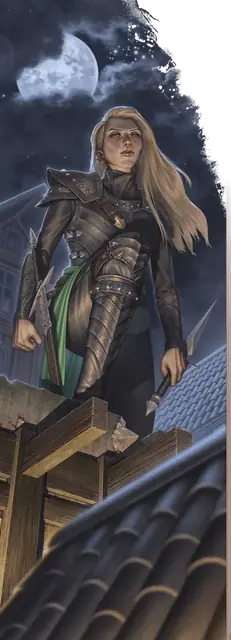

Карас Кхембрил
Karas Chembryl
Средний Гуманоид (Человек), Нейтральный Злой, именной НИП

Класс Защиты 17 Инициатива +11 (21)
Хиты 104 (19к8 + 19)
Скорость 30 футов, Лазания 30 футов
| мод | спас | ||
|---|---|---|---|
| СИЛ | 11 | +0 | +0 |
| ЛОВ | 20 | +5 | +8 |
| ТЕЛ | 12 | +1 | +4 |
| мод | спас | ||
|---|---|---|---|
| ИНТ | 18 | +4 | +7 |
| МДР | 15 | +2 | +5 |
| ХАР | 17 | +3 | +3 |
Сопротивление урону Психический, Яд
Чувства пассивное Восприятие 18, Слепое зрение 10 футов
Языки Общий, Воровской жаргон, Инфернальный, Эльфийский
Опасность 8 (3 900 опыта; БВ +3)
Особенности
Увёртливость. Если Карас подвергается эффекту, позволяющему совершить спасбросок Ловкости, чтобы получить только половину урона, то вместо этого она вообще не получает никакого урона, если преуспевает в спасброске, и только половину, если проваливает его; для этого она не должна быть Недееспособной.
Легендарное сопротивление (3/день, или 4/день в Логове). Если Карас проваливает спасбросок, она вместо этого может преуспеть в нём.
Действия
Мультиатака. Карас совершает две атаки Кинжалом страха или Клинком Тирана в любой комбинации.
Кинжал страха. Бросок рукопашной или дальнобойной атаки: +8, досягаемость 5 фт. или дистанция 20/60 фт. Попадание: 10 (2к4 + 5) Колющего урона плюс 4 (1к8) Некротического урона. Промах или попадание: Кинжал магическим образом возвращается в руку Карас сразу после совершения дальнобойной атаки.
Клинок Тирана. Бросок рукопашной атаки: +8, досягаемость 5 фт. Попадание: 8 (1к6 + 5) Рубящего урона, и цель Испугана до начала следующего хода Карас. Если цель уже Испугана, она вместо этого получает 10 (3к6) Психического урона.
Сотворение заклинаний. Карас Кхембрил сотворяет одно из следующих заклинаний, не нуждаясь в Материальных компонентах (заклинательная характеристика — Интеллект, Сл спасброска заклинаний 15):
Неограниченно: Дружба, Тишина, Чудотворство
2/день: Луч болезни, версия 5-го уровня
1/день каждое: Усыхание, Фальшивый двойник
Бонусные действия
Отступление. Карас перемещается на расстояние вплоть до половины своей Скорости, не Провоцируя атак, и совершает действие Затаивание.
Легендарные действия
У этого существа есть 3 использования Легендарных действий (или 4 использования в его Логове); оно может немедленно после окончания хода другого существа потратить одно использование, чтобы совершить одно из следующих действий. Существо восполняет все потраченные использования в начале каждого своего хода.
Цепенящий ужас. Спасбросок Мудрости: Сл 15, одно видимое Карас существо в 90 футах. Провал: 10 (3к6) Психического урона, и цель Испугана на 1 минуту. Пока цель Испугана, её Скорость равна 0; она повторяет спасбросок в конце каждого своего хода, оканчивая этот эффект при успехе. Провал или успех: Карас не может совершить это действие повторно до начала своего следующего хода.
Скрытная атака. Карас совершает одну атаку Кинжалом страха и использует Отступление.
Бонус мастерства +3
Карас Кхембрил
Ассасинка и преемница зловещего наследия
После гибели патриарха Фзула Кхембрила дом Кхембрил и его потомки рассеялись по всему Фаэруну. Одни добросовестно продолжали служение Бейну, другие пытались освободиться от зловещей тени этого бога. Однако никто не перенял тираническое наследие Кхембрилов так рьяно, как Карас — безжалостная убийца, чья верность богам Бейну, Баалу и Миркулу принесла ей титул Предвестницы Мёртвой троицы.
История
Карас родилась в дальней ветви рода Кхембрил, жившей в Глубоководье. Хотя эта ветвь давно оставила служение Бейну, Карас рано обнаружила в себе знаки его благосклонности: безжалостное красноречие, неестественно пугающее присутствие и склонность к оккультной магии. Опасаясь этого, родители Карас подавляли её дар, скрывая семейную историю и принуждая дочь притворяться обычной.
Мятежная и неудовлетворённая жизнью, Карас связалась с Жентарим. Когда её фамилия вызвала интерес у старших членов организации, она начала изучать свою родословную и в конце раскрыла историю Фзула Кхембрила. Придя в ярость от того, что семья скрывала правду, Карас приняла свои дары как наследница Бейна.
За несколько лет Карас стала грозной ассасинкой и высокопоставленным членом Жентарим. Странствия по Фаэруну привели её к разгадке связей Бейна с Баалом и Миркулом. Почувствовав родство с этими хулимыми богами, Карас присягнула Мёртвой троице. Теперь она действует в основном из Врат Балдура, где неустанно ищет остатки силы Бейна, Баала и Миркула, сокрытые в самом городе и вокруг него.
Личность
Безжалостная и яростно независимая, Карас жаждет власти во всех её проявлениях. Словом она владеет столь же искусно, как и клинком, часто заставляя противников недооценить её — прежде чем нанести удар из тени.
Хотя она состоит в Жентарим, иерархия и семейные дрязги организации её мало заботят. Карас считает лидерство в Жентарим своим правом по рождению и надеется, что, скопив силу Мёртвой троицы, однажды свергнет Перегоста — нынешнего главу Жентарим — и заберёт всё ей причитающееся.
Как использовать Карас Кхембрил
Карас Кхембрил — хороший выбор на роль финального злодея для низкоуровневого приключения во Вратах Балдура или любой кампании про Мёртвую троицу и Жентарим. Поначалу персонажи могут узнать слухи о её бесчинствах, затем выведать подробную информацию о её неприглядных связях и, наконец, с боем пробиться сквозь культистов и жентов для конфронтации с Карас.
В длинной кампании Карас Кхембрил может стать промежуточной угрозой, что поддерживает хрупкую связь с другими фанатичными последователями Мёртвой троицы — например могущественными культистами Бейна, Баала и Миркула. В такой кампании финальным гением-кукловодом может быть Наследник Мёртвой троицы, который манипулирует Карас и остальными, чтобы низвергнуть цивилизацию в пучину кровавого угара.
Логово Карас Кхембрил
Карас действует из убежища глубоко под Вратами Балдура. В нём установлены алтари Мёртвой троицы и хранятся её изыскания о преданиях и Артефактах, связанных с этими богами. Лишь самые доверенные соратники знают, где находится логово.
Местность, в которой находится логово Карас, изменяется из-за её присутствия, что создаёт следующие эффекты:
• Крадущийся ужас. Безудержный страх царствует во владениях Карас. В пределах 1 мили от логова все существа, кроме членов Жентарим и культистов Бейна, Баала или Миркула, совершают с Помехой спасброски на избежание или окончание состояния Испуганный.
• Знания мертвецов. Когда в пределах 1 мили от логова умирает Гуманоид, Карас узнает одну тайну, которую тот знал при жизни.
Если Карас умирает или перемещает своё логово в другое место, все эти эффекты мгновенно исчезают.